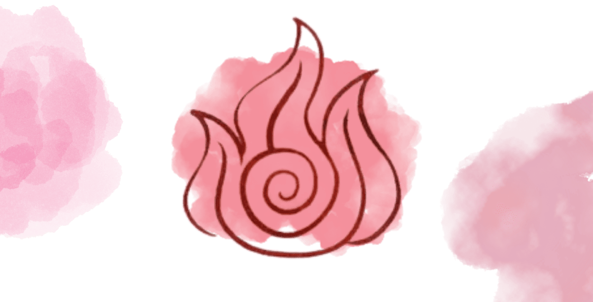
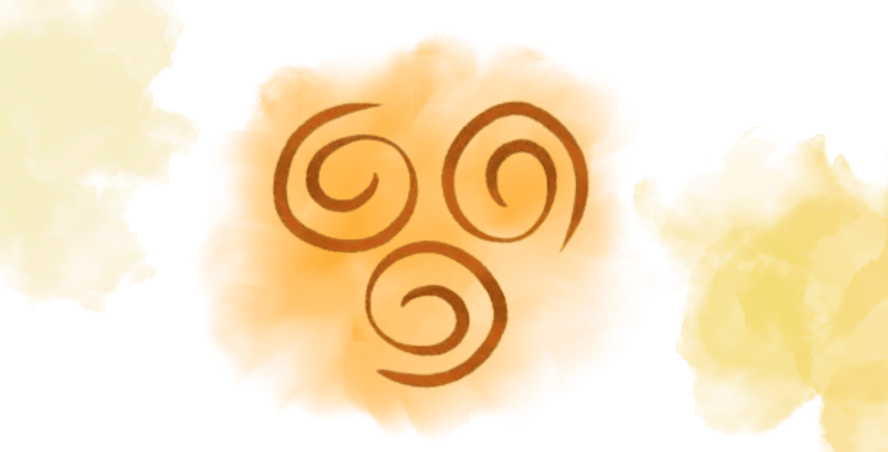

.png)
Descubra as possibilidades de dobra!
Dobra de Fogo (Firebending) Movida pela paixão, energia e força de vontade, a dobra de fogo é a única que gera seu elemento a partir do próprio chi (energia vital) do dobrador, em vez de apenas controlá-lo. Originária dos Nômades do Fogo, permite lançar chamas, raios (sub-técnica: geração de raios) e até voar usando propulsão. É altamente ofensiva, mas descontrolada, pode consumir o usuário.


Dobra de Água (Waterbending) Baseada na fluidez e adaptabilidade da lua, a dobra de água permite manipular água em seus diversos estados (líquido, sólido e gasoso). É única por ter a capacidade de curar ferimentos e, quando usada em noites de lua cheia, permite que um dobrador muito poderoso realize a dobra de sangue (controlar pessoas). Os Nômades do Pântano e as Tribos da Água do Norte e do Sul são seus principais praticantes.
Dobra de Terra (Earthbending) Fundamentada na força, persistência e firmeza, a dobra de terra controla rochas, solo e metais (uma sub-técnica chamada metalbending). Seus mestres, os Reino da Terra, são conhecidos por sua postura enraizada e movimentos diretos. A dobra de lava é uma sub-técnica rara que combina terra com calor. É o oposto natural da dobra de ar.
.png)

Dobra de Ar (Airbending) Baseada na liberdade, evasão e espiritualidade, a dobra de ar manipula os ventos e correntes atmosféricas. Caracteriza-se por movimentos circulares e ágeis, permitindo ao dobrador correr em alta velocidade, saltar grandes distâncias, planar com um glider e, para o último Mestre Airbender Aang, criar um escudo de ar. Os Monges Nômades do Ar (originalmente pacifistas) dominavam essa arte.